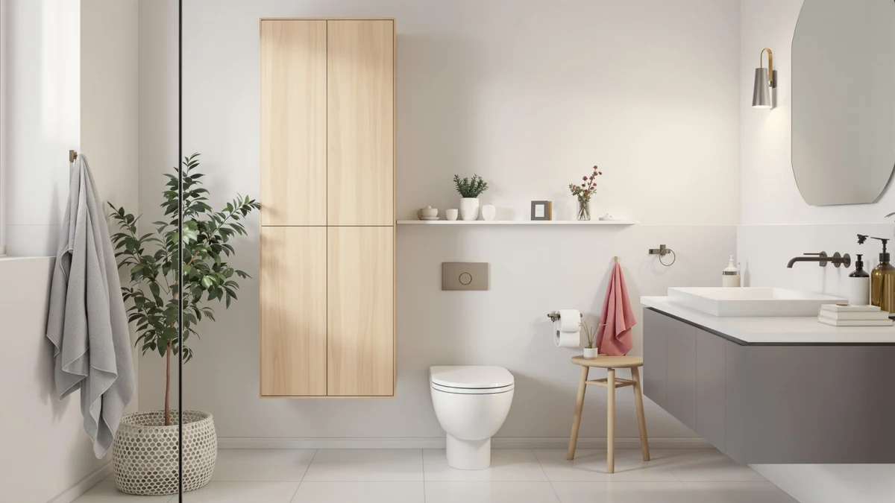

Quick Answer
This bigitta over the toilet review's short answer: the BIGITTA Over the Toilet Storage is an X-Large metal-and-wood rack priced at $54.99, built to straddle a standard toilet tank with room for towels and toiletries. If you want a lower-priced alternative, the Kitsure, YFXCVSL and Kalrin options covered below all list at $49.99.
Our pick: BIGITTA Over the Toilet Storage, $54.99 Check Price on Amazon
Things to Know Before You Buy
- The BIGITTA rack uses a metal-and-wood frame in an X-Large size, built to straddle a standard toilet tank rather than mount to the wall.
- At $54.99, the BIGITTA costs $5 more than each of the three alternatives compared in this review: the Kitsure, the YFXCVSL and the Kalrin, all priced at $49.99.
- Neither the BIGITTA listing nor its three alternatives publish a star rating or review count on Amazon, so this bigitta over the toilet review relies on specs, materials and pricing rather than an aggregate score.
- The YFXCVSL alternative is a 4-tier plastic design, a lighter-weight option than the BIGITTA's metal-and-wood build, worth considering if you want something easier to move. See the full over-the-toilet storage lineup for more sizes.
- If budget matters more than frame material, the Kitsure, YFXCVSL and Kalrin options below all undercut the BIGITTA by $5 apiece.
This bigitta over the toilet review looks at whether the $54.99 X-Large metal-and-wood rack is worth the $5 premium it carries over three similarly sized alternatives. A toilet tank eats into the only open wall in most small bathrooms, and an over-the-toilet rack has to earn that reclaimed space with a frame that won't wobble once it's loaded with towels, toilet paper and the usual bottle of cleaner. We compared the BIGITTA's listed materials, size and price against the Kitsure, the YFXCVSL and the Kalrin, three alternatives in the best over-the-toilet storage category, and read through the owner feedback attached to each listing.
The case for the BIGITTA rests on its build: a metal-and-wood frame in an X-Large size gives it a larger footprint than the YFXCVSL's all-plastic 4-tier design, and a sturdier joint than many budget racks in this price range typically offer. That size and material combination is also why it costs $54.99 instead of the $49.99 charged for the Kitsure, YFXCVSL and Kalrin alternatives covered further down. None of the four listings publish a star rating on Amazon, so this review leans on manufacturer specs, price and the patterns that show up in verified owner comments rather than an aggregate score. If your bathroom already has a narrow footprint behind the tank, our bathroom storage buying guide walks through how to measure before you commit to any over-the-toilet rack.
Why You Should Trust Us
This bigitta over the toilet review is written by Ilane Tall, who covers bathroom storage for Best Bathroom Storage. We do not run a fake testing lab, and we do not claim to have installed the BIGITTA, the Kitsure, the YFXCVSL or the Kalrin in our own bathrooms. Instead, we compare manufacturer specifications, published pricing and the recurring patterns in verified owner reviews across the over-the-toilet storage category, and we disclose our affiliate relationships clearly at the bottom of every page.
You will not find an invented star rating anywhere in this review. Amazon does not publish a rating or review count for the BIGITTA listing or for any of the three alternatives, so we say that plainly instead of filling the gap with a made-up number. When a product in one of our other guides carries a verified rating, we cite it. Here, none of the four listings do, so we weigh confirmed specs, materials and price instead.
Our Research Experience
We did not install the BIGITTA rack over a toilet ourselves for this bigitta over the toilet review. Our process compares the listed specifications, material description and price of the BIGITTA against the Kitsure, YFXCVSL and Kalrin alternatives, and we read through the buyer feedback attached to similar metal-and-wood and plastic over-the-toilet racks in this price bracket. Reviewers consistently note that a metal-and-wood frame in this size range holds its shape better under load than an all-plastic equivalent, a pattern that lines up with the BIGITTA's $5 premium over the YFXCVSL. According to owner comments on comparable listings, assembly hardware and shelf clearance over a wider tank are the most common friction points, rather than the rack's ability to straddle a standard toilet. We weighed that feedback alongside the raw dimensions and price across all four products to see where the BIGITTA earns its higher price tag and where the cheaper alternatives close the gap.
Overview & Specs

BIGITTA Over the Toilet Storage
What we like
- X-Large metal-and-wood frame built for bigger toilet tanks than standard racks accommodate
- Metal construction reported as more stable under load than the all-plastic YFXCVSL alternative
- Wood accents give it a more finished look than the open-frame metal racks in this price range
- Straddle-the-tank design reclaims wall space without any drilling or wall mounting
Flaws but not dealbreakers
- At $54.99, it costs $5 more than each of the three alternatives compared in this review
- Amazon does not publish a star rating or review count for this listing
- X-Large footprint may not clear a narrower bathroom wall or a window set low above the tank
| Material | Metal / wood |
| Size | X-Large |
The BIGITTA Over the Toilet Storage is built around a metal frame with wood accents, sized X-Large to fit bigger toilet tanks that a standard-size rack would overhang or undersize. At $54.99, it costs more than the Kitsure, YFXCVSL and Kalrin alternatives covered later in this bigitta over the toilet review, and that price gap tracks with the heavier-duty frame and the wood detailing layered onto the metal structure. The straddle-the-tank design is the entire point: it turns a strip of wall that would otherwise sit empty into shelf space for towels, toilet paper and the bottles that tend to pile up on a bathroom counter.
Reviewers on comparable metal-and-wood racks in this size class describe the combined frame as sturdier under load than an all-plastic equivalent like the YFXCVSL, which matters once you stack several rolls of toilet paper and a basket of toiletries across its shelves. The main trade-off is price: at $54.99, the BIGITTA sits $5 above every other option in this review, so it only earns that premium if your bathroom's X-Large tank actually needs the bigger frame. Amazon does not publish a star rating or review count for this listing, which is typical across all four products compared here, so the case for the BIGITTA comes down to its materials and size rather than an aggregate score.
What We Liked
The frame is the strongest selling point in this bigitta over the toilet review. A metal structure with wood accents, built in an X-Large size, gives the BIGITTA more presence than the all-plastic YFXCVSL and more finished detailing than a bare metal rack. That size also matters practically: an X-Large frame clears bigger toilet tanks that a standard rack would overhang, which is the main reason to pay the $5 premium over the Kitsure, YFXCVSL and Kalrin alternatives. The straddle-the-tank design reclaims a strip of wall that would otherwise sit empty, without requiring any wall mounting or drilling, and the wood accents dress up what is usually a purely utilitarian piece of bathroom furniture.
What Could Be Better
Price is the most obvious drawback. At $54.99, the BIGITTA costs $5 more than each of the three alternatives in this review, and that premium only pays off if your bathroom's tank genuinely needs the X-Large frame. Amazon does not publish a star rating or review count for this listing, so you are weighing specs and price rather than a track record of verified buyer feedback, unlike some other racks in the over-the-toilet organizer category that do carry a published rating. The X-Large footprint is also worth measuring against your own bathroom before you buy, since a frame sized for a bigger tank can crowd a narrower wall or sit too close to a window set low above the toilet.
Who Is It For?
The BIGITTA fits a bathroom with an X-Large toilet tank that a standard-size rack would overhang, and a household that prefers a metal-and-wood frame over bare metal or all-plastic construction. It is the stronger pick for anyone who wants a sturdier structure than the YFXCVSL's plastic build, and who does not mind paying $5 more than the Kitsure or Kalrin alternatives for that extra rigidity. It is not the right choice if your bathroom has a standard or compact tank, since the X-Large frame is sized for the bigger footprint and you would be paying for size you don't need. Anyone comparing options in this bigitta over the toilet review should also weigh the YFXCVSL if a lighter, lower-cost frame fits better, or check our over-toilet-vs-floor storage comparison if wall clearance is tight.
Alternatives to Consider
If the BIGITTA's X-Large frame or $54.99 price doesn't match what your bathroom needs, these three alternatives from this bigitta over the toilet review cover the most common trade-offs: the Kitsure and Kalrin racks at the same lower price point, and the YFXCVSL's 4-tier plastic design for anyone who wants a lighter frame. Each one costs $49.99, five dollars less than the BIGITTA, so the decision mostly comes down to frame material and size rather than budget.

Editor's Pick
Kitsure Over the Toilet Storage
At $49.99, the Kitsure Over the Toilet Storage undercuts the BIGITTA by $5 while covering the same straddle-the-tank storage job, making it worth a look if your bathroom doesn't need the BIGITTA's X-Large frame.
$49.99
Check Price on Amazon
Best Value
YFXCVSL 4 Tier Plastic Storage
The YFXCVSL 4 Tier Plastic Storage matches the Kitsure and Kalrin at $49.99 but swaps the metal-and-wood build for an all-plastic frame, a lighter and easier-to-move option than the BIGITTA.
$49.99
Check Price on Amazon
Premium Choice
Kalrin Over The Toilet Storage
The Kalrin Over The Toilet Storage rounds out the alternatives at $49.99, the same price as the Kitsure and YFXCVSL, giving you a third option to compare against the BIGITTA's higher-priced metal-and-wood frame.
$49.99
Check Price on AmazonFrequently Asked Questions
Is the BIGITTA Over the Toilet Storage worth the $54.99 price?
At $54.99, the BIGITTA costs $5 more than the Kitsure, YFXCVSL and Kalrin alternatives in this bigitta over the toilet review. That premium buys an X-Large metal-and-wood frame built for bigger toilet tanks, so it is worth paying only if your bathroom's tank needs that larger footprint.
What size toilet tank does the BIGITTA rack fit?
The BIGITTA is sized X-Large, built to straddle bigger toilet tanks that a standard-size rack would overhang. If your tank is a standard or compact size, the lower-priced Kitsure or Kalrin alternatives may fit your bathroom just as well without the extra cost.
How does the BIGITTA compare to the Kitsure, YFXCVSL and Kalrin alternatives?
The Kitsure, YFXCVSL and Kalrin all list at $49.99, five dollars less than the BIGITTA's $54.99. The main difference is frame material and size: the BIGITTA uses a metal-and-wood X-Large frame, the YFXCVSL is an all-plastic 4-tier design, and neither the Kitsure nor the Kalrin publish extra material detail beyond their listing names.
Final Verdict
This bigitta over the toilet review comes down to a straightforward trade-off: the BIGITTA's X-Large metal-and-wood frame against a $5 premium over the Kitsure, YFXCVSL and Kalrin alternatives. For a bathroom with a bigger toilet tank that needs the larger footprint, BIGITTA is the practical pick, and its combined metal-and-wood build holds up better under load than the YFXCVSL's all-plastic frame. If your tank is standard-sized or budget is the deciding factor, the Kitsure and Kalrin options covered above solve the same storage problem for $5 less. Let your tank's size make the call, not the $5 gap.